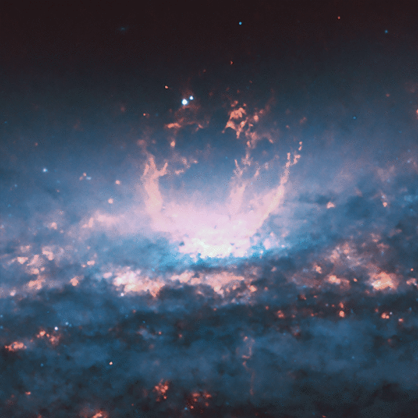

Superwinds and Superbubbles
Hydrodynamic Simulations and Photoionization Models

Starburst-driven Superwind and Superbubble in NGC 3079
(Credit: X-ray:NASA/CXC/UMich/J-T Li;Optical:NASA/STScI)
Hydrodynamic Simulations with the Non-equilibrium Atomic Chemistry and Cooling package MAIHEM built on the adaptive mesh hydrodynamics code FLASH,
and Photoionization Models with the Photoionization program CLOUDY.
© 2021, Site maintained by Ashkbiz Danehkar, based on a free design from codrops.com.